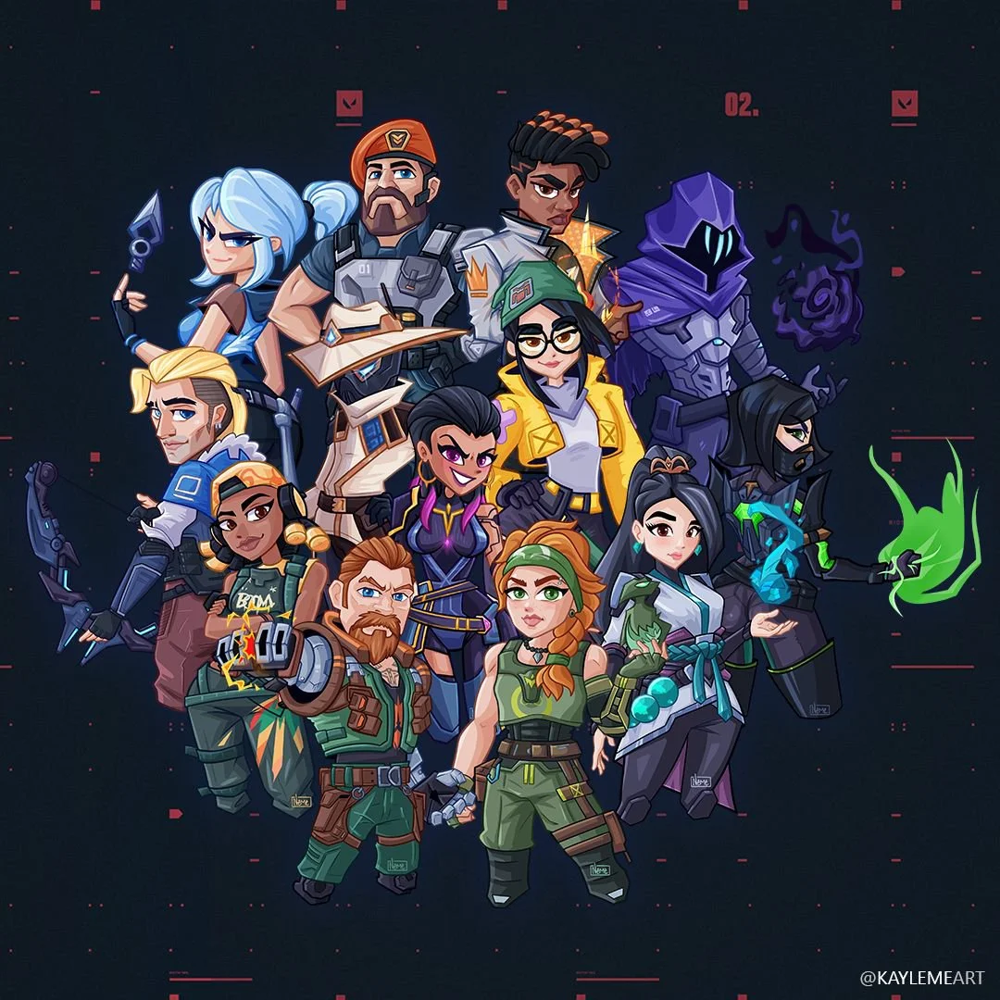

Gaming Artical
By: Shivanand VishwakarmaValorant is a tactical shooting game involving two teams with 5 players in each team. Every player can sign in and play remotely from anywhere in the world. Every game has 25 rounds and the team that wins 13 of them first wins the game. Players can choose their in-game characters called agents at the start of the game. Players can buy abilities and weapons at the start of the game. To uphold the competitive integrity of the game and prevent cheating, Riot Games' anti cheat system called Vanguard comes into action during gameplay. It can prevent players from using speed hacks (which allows players to move faster than others) and wall hacks (when players can see opponents through walls). The developer is working on adding aim locks (it locks aim at enemy by itself) and trigger bots (automatically shoots at an enemy) to Vanguard soon.
Valorant

In the standard non-ranked mode, the match is played as best of 25 - the first team to win 13 rounds
wins the match. The attacking team has a bomb-type device called the Spike. They must deliver and
activate the Spike on one of the multiple specified locations (bomb sites).
In the Spike Rush mode, the match is played as best of 7 rounds - the first team to win 4 rounds wins
the match. Players begin the round with all abilities fully charged except their ultimate, which charges
twice as fast as in standard games. All players on the attacking team carry a spike, but only one spike
may be activated per round.
Competitive matches are the same as unranked matches with the addition of a win-based ranking system
that assigns a rank to each player after 5 games are played. Players are required to win at least 10
unrated matches before being able to play competitive matches.[13] In July 2020, Riot introduced a "win
by two" condition for competitive matches, where instead of playing a single sudden death round at
12-12, teams will alternate playing rounds on attack and defense in overtime until a team claims victory
by securing a two-match lead. Each overtime round gives players the same amount of money to purchase
guns and abilities, as well as approximately half of their ultimate ability charge.
The Deathmatch mode was introduced on August 5, 2020.[16] 14 players enter a 9-minute free-for-all match
and the first person to reach 40 kills or the player who has the most kills when time is up wins the
match. Players spawn in with a random agent, and all abilities are disabled during the match which
indulges pure gunplay.